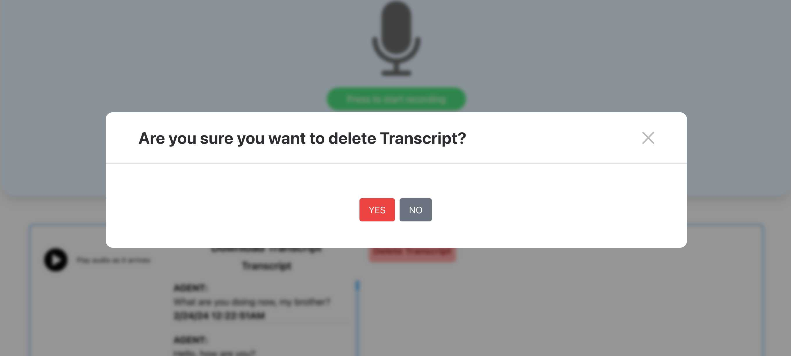
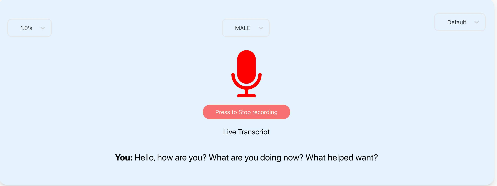

<div class="modal-dialog" role="document">
  <div class="modal-content">
    <div class="close-icon float-right pt-10 pr-10">
      <button
        type="button"
        class="close d-inline-block"
        data-dismiss="modal"
        aria-label="Close"
      >
        <span aria-hidden="true"><i class="fa fa-times"></i></span>
      </button>
    </div>
    <div class="modal-content border-0">
      <div class="modal-body pl-50 pr-50 pt-10 pb-20">
        <div class="blog-modal-img">
          
        </div>
        <div class="row">
          <div class="col-xl-7 col-lg-7 col-md-12 col-sm-12 col-12">
            <div class="content-wrapper">
              <h2 class="modal-title">Live Call Translator Twilio</h2>
              <p>
                Developed an advanced Live Call Translation System using Twilio,
                Node.js, WebSocket (WS), and Socket.IO, enhanced with Google
                Cloud's speech-to-text and text-to-speech services. This
                sophisticated platform supports real-time voice translation
                across 104 languages, catering to diverse global communication
                needs.
              </p>
              <div class="blog-modal-img">
                
              </div>
              <p>
                When a user initiates a call to a designated Twilio number, the
                system engages through Twilio's webhook to transfer the call to
                our translation platform. Here, the agent's browser
                automatically detects and sets the default source language,
                while the agent manually selects the caller's language to
                streamline the translation process.
              </p>
              <div class="blog-modal-img">
                
              </div>
              <h4>System Workflow:</h4>
              <p>
                Upon a user dialing a designated Twilio number, the call is
                seamlessly redirected to our platform via Twilio’s webhook. The
                system automatically detects and sets the agent’s browser
                language as the source language, while allowing the agent to
                manually select the caller’s language for accurate translations.
              </p>
              <h4>Key features of the system include</h4>
              <h5>Silence Detection</h5>
              <p>
                Utilizes silence detection technology where the system processes
                speech to text and translates it when the caller pauses for 500
                milliseconds. The text is then converted back to speech,
                ensuring a smooth conversational flow with an impressively low
                voice lag of about 0.5 milliseconds.
              </p>
              <h5>Live Transcription Display</h5>
              <p>
                Offers real-time transcription display to the agent, enhancing
                their ability to manage and respond to the conversation
                effectively.
              </p>
              <h5>Audio Customization Options</h5>
              <p>
                Provides agents the ability to select the gender of the
                synthesized voice and choose their microphone source, be it an
                external device or another specified option.
              </p>
              <h5>Transcription Management</h5>
              <p>
                Features robust transcription management tools, including
                options to download and delete transcriptions, ensuring data can
                be retained for future reference or removed for privacy.
              </p>
              <h5>Playback Controls</h5>
              <p>
                Includes flexible playback options, allowing agents to either
                listen to the translated speech or simply read the live
                transcription, catering to diverse operational preferences.
              </p>
              <div class="blog-modal-img">
                
              </div>
              <p>
                This project not only demonstrates my technical proficiency in
                integrating multiple advanced technologies but also emphasizes
                my commitment to creating solutions that enhance communication
                efficiency and accessibility on a global scale.
              </p>
            </div>
          </div>
          <!-- /col -->
          <div class="col-xl-5 col-lg-5 col-md-12 col-sm-12 col-12">
            <div
              class="meta-wrapper form-bg mt-60 pt-40 pb-45 pr-20 pl-45 mt-40 mb-10"
            >
              <ul class="item-meta">
                <li>
                  Project Type :
                  <span class="pl-2 openS-font-family"
                    >Multilingual Translation Platform</span
                  >
                </li>
                <li>
                  Client :
                  <span class="pl-2 openS-font-family">Jordan Orlick</span>
                </li>
                <li>
                  Duration :<span class="pl-2 openS-font-family">5 Weeks</span>
                </li>
                <li>
                  Tasks :
                  <span class="pl-2 openS-font-family"
                    >Frontend, Backend, Deployments</span
                  >
                </li>
                <li>
                  Budget :
                  <span class="pl-2 openS-font-family">$15500</span>
                </li>
              </ul>
              <a
                href="https://translation.letz.chat/twilio/incomming-call/63c8dad11d541ff08a0c84a9"
                target="_blank"
                class="btn position-relative over-hidden text-uppercase mt-20 pt-2 pb-2"
                >View Live</a
              >
            </div>
          </div>
          <!-- /col -->
        </div>
        <!-- /row -->
        <div class="pro-modal-footer mt-30 mb-45">
          <div class="row align-items-center justify-content-md-between">
            <div class="col-xl-7 col-lg-7 col-md-12 col-sm-12 col-12">
              <div class="modal-tags d-sm-flex align-items-center pt-25">
                <h6 class="mb-0 pr-15">Tags :</h6>
                <ul class="tag-list">
                  <li class="d-inline-block pr-10">
                    <a class="d-block" href="#">Twilio</a>
                  </li>
                  <li class="d-inline-block pr-10">
                    <a class="d-block" href="#">Node.js</a>
                  </li>
                  <li class="d-inline-block pr-10">
                    <a class="d-block" href="#">WebSocket</a>
                  </li>
                  <li class="d-inline-block pr-10">
                    <a class="d-block" href="#">Socket.IO</a>
                  </li>
                  <li class="d-inline-block pr-10">
                    <a class="d-block" href="#">Google Cloud</a>
                  </li>
                  <li class="d-inline-block pr-10">
                    <a class="d-block" href="#">Speech-to-Text</a>
                  </li>
                  <li class="d-inline-block pr-10">
                    <a class="d-block" href="#">Text-to-Speech</a>
                  </li>
                  <li class="d-inline-block pr-10">
                    <a class="d-block" href="#">Real-Time Translation</a>
                  </li>
                  <li class="d-inline-block pr-10">
                    <a class="d-block" href="#">Voice Translation</a>
                  </li>
                  <li class="d-inline-block pr-10">
                    <a class="d-block" href="#">Multilingual Communication</a>
                  </li>
                  <li class="d-inline-block pr-10">
                    <a class="d-block" href="#">API Integration</a>
                  </li>
                  <li class="d-inline-block pr-10">
                    <a class="d-block" href="#">Webhook</a>
                  </li>
                  <li class="d-inline-block pr-10">
                    <a class="d-block" href="#">Real-Time Transcription</a>
                  </li>
                  <li class="d-inline-block pr-10">
                    <a class="d-block" href="#">AI Translation</a>
                  </li>
                  <li class="d-inline-block pr-10">
                    <a class="d-block" href="#">Language Technology</a>
                  </li>
                </ul>
              </div>
            </div>
            <!-- /col -->

            <!-- /col -->
          </div>
          <!-- .row -->
        </div>
      </div>
      <!-- /modal-body -->
    </div>
  </div>
</div>
